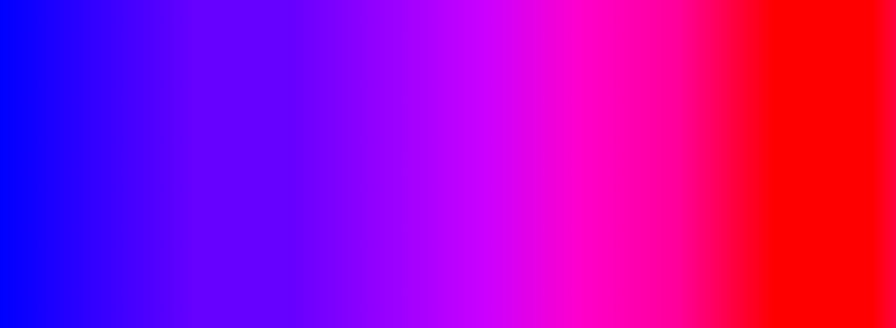

The circle bar chart shows the percentage of the available taxis at every hour. The map to the right shows where the cars are at the specified hour. Choose a day in March 2013 with the slider below Choose an hour of the day with the slider to the right.
Select day of March 2013
Low density
High density